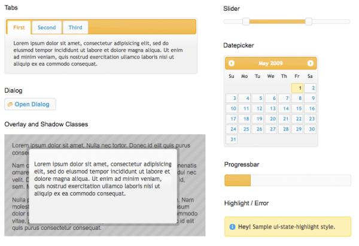
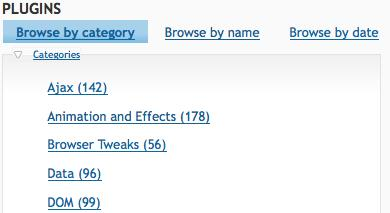
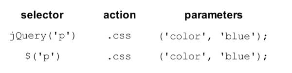
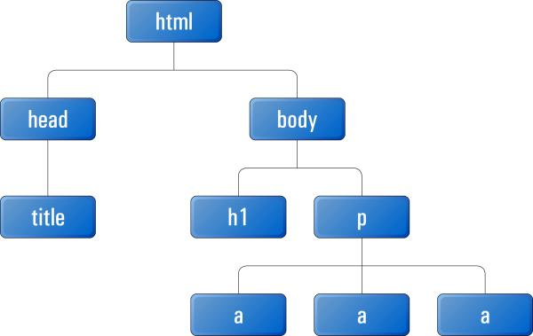

{% include JB/setup %}
{% raw %}
<div>
<div class="calibre3"></div><div class="toc" title="Chapter 1Falling in Love with jQuery"><div class="toc"><div class="toc"><div class="toc"><div class="calibre3"></div><h1 class="title"><a xmlns:saxon="http://icl.com/saxon" id="chapter_falling_in_love" class="calibre5"></a><span xmlns:d="http://docbook.org/ns/docbook" class="sitepoint-chapter-titlepage-label">Chapter <span class="sitepoint-chapter-titlepage-number">1</span></span><br xmlns:d="http://docbook.org/ns/docbook" class="calibre11"/><span xmlns:d="http://docbook.org/ns/docbook" class="calibre5">Falling in Love with jQuery</span></h1></div></div></div>
  
      

  
      So you have the coding chops to write lean, semantic HTML, and can
  back it up with masterful CSS to transform your design ideas into gorgeous
  websites that enthrall your visitors. But these days, you realize, inspiring
  designs and impeccable HTML alone fall short when you’re trying to create
  the next Facebook or Twitter. So, what’s the missing piece of the front-end
  puzzle?

  
      It’s JavaScript. That rascally scripting language, cast as the black
  sheep of the web development family for so many years. JavaScript is how you
  add complex behaviors, sophisticated interactions, and extra pizzazz to your
  site. To conquer the sleeping giant that is JavaScript, you just need to
  buckle down and spend the next few years learning about programming
  languages: functions, classes, design patterns, prototypes, closures
  ...

  
      Or there’s a secret that some of the biggest names on the Web—like
  Amazon, Google, Microsoft, Mozilla, Twitter, and WordPress—will probably be
  okay about us sharing with you: “Just use jQuery!” Designers and developers
  the world over are using the jQuery library to elegantly and rapidly
  implement their interaction ideas, completing the web development
  puzzle.

  
      In this chapter, we’ll have a look at what makes jQuery so good, and
  how it complements HTML and CSS in a more natural way than our old friend
  and bitter enemy: plain old JavaScript. We’ll also look at what’s required
  to get jQuery up and running, and working with our current sites.

  
      <div class="toc" title="What’s so good about jQuery?"><div class="toc"><div class="toc"><div class="toc"><h2 class="title1"><a xmlns:saxon="http://icl.com/saxon" id="d4e281" class="calibre5"></a>What’s so good about jQuery?<a id="ch01-001" class="calibre5"></a>
         </h2></div></div></div>
    
         

    
         You’ve read that jQuery makes it easy to play with the DOM, add
    effects, and execute Ajax requests, but what makes it better than, say,
    writing your own library, or using one of the other (also excellent)
    JavaScript libraries out there?

    
         First off, did we mention that jQuery makes it easy to play with the
    DOM, add effects, and execute Ajax requests? In fact, it makes it so easy
    that it’s downright good, nerdy fun: you’ll often need to pull back from
    some craziness you just invented, put on your web designer hat, and
    exercise a little bit of restraint (ah, the cool things we could create if
    good taste were not a barrier!). But there are a multitude of notable
    factors you should consider if you’re going to invest your valuable time
    in learning a JavaScript library.

    
         <div class="toc" title="Cross-browser Compatibility"><div class="toc"><div class="toc"><div class="toc"><h3 class="title2"><a xmlns:saxon="http://icl.com/saxon" id="d4e288" class="calibre5"></a>Cross-browser Compatibility<a id="ch01-002x" class="calibre5"></a>
               <a id="ch01-002" class="calibre5"></a>
            </h3></div></div></div>
      
            

      
            Aside from being a joy to use, one of the biggest benefits of
      jQuery is that it handles a lot of infuriating cross-browser issues for
      you. Anyone who has written serious JavaScript in the past can attest
      that cross-browser inconsistencies will drive you mad. For example, a
      design that renders perfectly in Firefox and Internet Explorer 8 just
      falls apart in Internet Explorer 7, or an interface component you’ve
      spent days handcrafting works beautifully in all major browsers except
      Opera on Linux. And the client just happens to use Opera on Linux. These
      types of issues are never easy to track down, and even harder to
      completely eradicate.

      
            Even when cross-browser problems are relatively simple to handle,
      you always need to maintain a mental knowledge bank of them. When it’s
      11 p.m. on the night before a major project launch, you can only hope
      you recall why there’s a weird padding bug on a browser you forgot to
      test!

      
            The jQuery team is keenly aware of cross-browser issues, and more
      importantly they understand <span><em class="calibre8">why</em></span> these issues occur.
      They have written this knowledge into the library—so jQuery works around
      the caveats for you. Most of the code you write will run exactly the
      same on all the major browsers, including everybody’s favorite little
      troublemaker: Internet Explorer 6. We’re quite sure your company is
      progressive enough to not require you to support IE6, but it certainly
      gives you a nice warm feeling to know that jQuery has your back there
      too.

      
            This feature alone will save the average developer a lifetime of
      headaches. Of course, you should always aim to keep up to date with the
      latest developments and best practices in our industry, but leaving the
      task of hunting down obscure browser bugs to the jQuery Team (and they
      fix more and more with each new version) allows you more time to
      implement your ideas.<a id="d4e300"></a>
            
    
         </div>

    
         <div class="toc" title="CSS3 Selectors"><div class="toc"><div class="toc"><div class="toc"><h3 class="title2"><a xmlns:saxon="http://icl.com/saxon" id="d4e301" class="calibre5"></a>CSS3 Selectors</h3></div></div></div>
      
            

      
            
               <a id="ch01-003"></a>
               <a id="ch01-003a"></a>Making today’s technologies cross-browser compliant is all
      well and good, but jQuery also fully supports the upcoming CSS3 selector
      specification. Yes, even in Internet Explorer 6! You can gain a head
      start on the future by learning and using CSS3 selectors right now in
      your production code. Selecting elements you want to change lies at the
      heart of jQuery’s power, and CSS3 selectors give you even more tools to
      work with.
    
         </div>

    
         <div class="toc" title="Helpful Utilities"><div class="toc"><div class="toc"><div class="toc"><h3 class="title2"><a xmlns:saxon="http://icl.com/saxon" id="d4e310" class="calibre5"></a>Helpful Utilities</h3></div></div></div>
      
            

      
            Also included is an assortment of utility functions that implement
      common functions useful for writing jQuery (or are missing from
      JavaScript): string trimming, the ability to easily extend objects, and
      more. These functions by themselves are particularly handy, but they
      help promote a seamless integration between jQuery and JavaScript that
      results in code that’s easier to write and maintain.

      
            One noteworthy utility is <a id="ch01-004"></a>
               <code class="email">jQuery.support</code> (or
      <code class="email">$.support</code>), which tests to see if certain features
      are available on the current user’s browser. Traditionally, developers
      have resorted to <a id="ch01-0049"></a>browser sniffing—determining
      which web browser the end user is using, based on information provided
      by the browser itself—to work around known issues. This has always been
      an unsatisfying and error-prone practice. Using the jQuery
      <code class="email">supports</code> utility, you can test to see if a certain
      feature is available to the user, and easily build applications that
      degrade gracefully on older browsers, or those not
      standards-compliant.

      
            And while you might gain a little more power and a few extra
      features from more dedicated feature detection micro-libraries like
      <a id="ch01-005"></a>
               <a href="http://www.modernizr.com/">Modernizr</a>,
      making use of the tools to hand is a ninja’s signature. It’s bad form to
      add even a micro-library when you don’t need to.
    
         </div>

    
         <div class="toc" title="jQuery UI"><div class="toc"><div class="toc"><div class="toc"><h3 class="title2"><a xmlns:saxon="http://icl.com/saxon" id="d4e326" class="calibre5"></a>jQuery UI<a id="ch01-006" class="calibre5"></a>
               <a id="ch01-006x" class="calibre5"></a>
               <a id="ch01-006xa" class="calibre5"></a>
               <a id="ch01-006xb" class="calibre5"></a>
               <a id="ch01-006xc" class="calibre5"></a>
            </h3></div></div></div>
      
            

      
            jQuery has already been used to make some impressive widgets and
      effects, some of which were useful enough to justify inclusion in the
      core jQuery library itself. Past plugins like Paul Bakaus’s and Brandon
      Aaron’s Dimensions, and Ben Alman’s Unwrap are a couple that spring to
      mind. As you learn more about jQuery and the jQuery community, you’ll
      find further examples. However, the jQuery team wisely decided that, in
      order to keep the core library focused, they’d separate out higher-level
      constructs and package them into a neat library that sits on top of
      jQuery.

      
            The first library of this type is called jQuery UI, and the latest
      is <a id="ch01-007"></a>jQuery Mobile (which we’ll look at more closely in <a href="ch09.html" title="Chapter 9Plugins, Themes, and Advanced Topics">Chapter 9</a>). <span><strong class="calibre9">jQuery UI</strong></span>
      comprises a menagerie of useful effects and advanced widgets that are
      accessible and highly customizable through the use of themes. Some of
      these features are illustrated in <a href="ch01.html#fig_jquery_ui" title="Figure 1.1. A few jQuery UI widgets">Figure 1.1</a>.

      
            <div class="toc"><a xmlns:saxon="http://icl.com/saxon" id="fig_jquery_ui"></a><div class="figure-contents">
        
               

        
               <div class="figure-contents"></div>
      
            </div><p xmlns:l="http://docbook.sourceforge.net/xmlns/l10n/1.0" xmlns:d="http://docbook.org/ns/docbook" class="title4">Figure 1.1. A few jQuery UI widgets<a id="ch01-006f"></a>
               </p></div>

      
            Accordions, sliders, dialog boxes, date pickers, and more—all
      ready to be used right now! You could spend a bunch of time creating
      them yourself in jQuery (as these have been) but the jQuery UI controls
      are configurable and sophisticated enough that your time would be better
      spent elsewhere: namely implementing your unique project requirements
      rather than ensuring your custom date picker appears correctly across
      different browsers!

      
            We’ll certainly be using a bunch of jQuery UI functionality as we
      progress through the book. We’ll even integrate some of the funky themes
      available, and learn how to create our own themes using the jQuery UI
      ThemeRoller tool.<a id="d4e363"></a>
            
    
         </div>

    
         <div class="toc" title="Plugins"><div class="toc"><div class="toc"><div class="toc"><h3 class="title2"><a xmlns:saxon="http://icl.com/saxon" id="d4e364" class="calibre5"></a>Plugins<a id="ch01-008" class="calibre5"></a>
            </h3></div></div></div>
      
            

      
            The jQuery team has taken great care in making the jQuery library
      extensible. By including only a core set of features while providing a
      framework for extending the library, it’s made it easy to create plugins
      that you can reuse in all your jQuery projects, as well as share with
      other developers. A lot of fairly common functionality has been omitted
      from the jQuery core library, and relegated to the realm of the plugin.
      Don’t worry, this is a feature, not a flaw. Any additional required
      functionality can be included easily on a page-by-page basis to keep
      bandwidth and code bloat to a minimum.

      
            Thankfully, a lot of people have taken advantage of jQuery’s
      extensibility, so there are already hundreds of excellent downloadable
      plugins available from the jQuery plugin repository, with new ones added
      all the time. A portion of this can be seen in <a href="ch01.html#fig_plugin_repository" title="Figure 1.2. The jQuery plugin repository">Figure 1.2</a>.

      
            <div class="toc"><a xmlns:saxon="http://icl.com/saxon" id="fig_plugin_repository"></a><div class="figure-contents">
        
               

        
               <div class="figure-contents"></div>
      
            </div><p xmlns:l="http://docbook.sourceforge.net/xmlns/l10n/1.0" xmlns:d="http://docbook.org/ns/docbook" class="title4">Figure 1.2. The jQuery plugin repository<a id="ch01-008f"></a>
               </p></div>

      
            Whenever you’re presented with a task or problem, it’s worth
      checking to see if there’s a plugin that might suit your needs. That’s
      because almost any functionality you might require is likely to have
      already been turned into a plugin, and is available for you to start
      using. Even if it turns out that you need to do some work yourself, the
      plugin repository is often the best place to steer you in the right
      direction.

      
            <div class="tip" title="Note: Where Are My Plugins?"><h3 class="title2">Note: Where Are My Plugins?</h3>
        
               

        
               At the time of publication, the <a href="http://plugins.jquery.com/">jQuery plugin</a> repository is
        under development. A placeholder warning at the site says: “We've been
        looking to provide a higher-quality, spam-free experience at the
        plugins site for some time, and a major error on our part forced us to
        shut down the current site before we could put the new one in place.”
        The full backstory on the change, plus information about the progress
        of the site’s development and where you can find various plugins, is
        on the <a href="http://blog.jquery.com/2011/12/08/what-is-happening-to-the-jquery-plugins-site/">jQuery
        blog.</a> You can follow progress of the plugin site’s development
        on <a href="https://github.com/jquery/plugins.jquery.com">GitHub.</a>
                  <a id="d4e387"></a>
               
      
            </div>
    
         </div>

    
         <div class="toc" title="Keeping Markup Clean"><div class="toc"><div class="toc"><div class="toc"><h3 class="title2"><a xmlns:saxon="http://icl.com/saxon" id="d4e388" class="calibre5"></a>Keeping Markup Clean</h3></div></div></div>
      
            

      
            
               <a id="ch01-009a"></a>
               <a id="ch01-009b"></a>
               <a id="ch01-009"></a>Separating script behavior from page presentation is best
      practice in the web development game, though it does present its share
      of challenges. jQuery makes it a cinch to completely rid your markup of
      inline scripting, thanks to its ability to easily hook elements on the
      page and attach code to them in a natural, CSS-like manner. jQuery lacks
      a mechanism for adding inline code, so this separation of concerns leads
      to leaner, cleaner, and more maintainable code. As a result, it’s easy
      to do things the right way, and hard to do them the wrong way!

      
            And jQuery isn’t limited to meddling with a page’s existing HTML;
      it can also add new page elements and document fragments via a
      collection of handy functions. There are functions to insert, append,
      and prepend new chunks of HTML anywhere on the page. You can even
      replace, remove, or clone existing elements: all functions that help you
      to progressively enhance your sites, thus providing a fully featured
      experience to users whose browsers allow it, and an acceptable
      experience to everyone else.
    
         </div>

    
         <div class="toc" title="Widespread Adoption"><div class="toc"><div class="toc"><div class="toc"><h3 class="title2"><a xmlns:saxon="http://icl.com/saxon" id="d4e400" class="calibre5"></a>Widespread Adoption</h3></div></div></div>
      
            

      
            If you study usage trends on <a href="http://www.google.com/trends">Google Trends,</a> you’ll witness
      jQuery’s exponential rise to superstardom. If you’re wisely wary of
      trying that, you can always take a look at <a href="http://trends.builtwith.com/javascript/jQuery">BuiltWith’s
      graphs.</a> It’s good to be in the “in” crowd when it comes to
      libraries, as popularity equates to more active code development and
      plenty of interesting third-party goodies.

      
            Countless big players on the Web are jumping on the jQuery
      bandwagon: IBM, Netflix, Nokia, Wikipedia, and even Google (which both
      uses and hosts the jQuery library), and Microsoft, which now includes
      jQuery with its <a id="ch01-010"></a>MVC framework and even in its IDE (integrated development
      environment), <a id="ch01-011"></a>Visual Studio. With such a vast range of large companies
      on side, it’s a safe bet that jQuery will be around for some time to
      come, so the time and effort you invest in learning it will be well
      worth your while. In fact, jQuery can be found on nearly 40% of sites
      that use JavaScript, so honing your jQuery skills can really open some
      doors for you.

      
            jQuery’s popularity has also spawned a large and generous
      community that’s surprisingly helpful. No matter what your level of
      skill, you’ll find other developers patient enough to help you out and
      work through any issues you have. This caring and sharing spirit has
      also spread out to the wider Internet, blossoming into an encyclopedia
      of high-quality tutorials, blog posts, and documentation.<a id="d4e411"></a>
            
    
         </div>
  
      </div>

  
      <div class="toc" title="What’s the downside?"><div class="toc"><div class="toc"><div class="toc"><h2 class="title1"><a xmlns:saxon="http://icl.com/saxon" id="d4e412" class="calibre5"></a>What’s the downside?<a id="ch01-012" class="calibre5"></a>
         </h2></div></div></div>
    
         

    
         There barely is a downside! The main arguments against using any
    JavaScript library have always been speed and size: some say that using a
    library adds too much download bloat to pages, while others claim that
    libraries perform poorly compared with leaner custom code. Though these
    arguments are worth considering, their relevance is quickly fading.

    
         First, as far as size is concerned, jQuery is lightweight. The core
    jQuery library has always had a fairly small footprint: about 19kB for the
    basics, less than your average JPG image. Any extras your project needs
    (such as plugins or components from the jQuery UI library) can be added in
    a modular fashion, so you can easily count your bandwidth calories.

    
         Speed (like size) is becoming a decreasing concern as computer
    hardware specifications rise and browsers’ JavaScript engines grow faster
    and faster. Of course, this is far from implying that jQuery is slow; the
    jQuery team seem to be obsessed with speed! Every new release is faster
    than the last, so any benefit you might derive from rolling your own
    JavaScript is shrinking every day.

    
         When it comes to competing JavaScript libraries (and there are more
    than a handful out there), jQuery is the best at doing what jQuery does:
    manipulating the DOM, adding effects, and making Ajax requests. Still,
    many of the libraries are of excellent quality and it’s always worth
    looking at the alternatives, but if the reasons we’ve outlined appeal to
    you, jQuery is probably the way to go.

    
         Enough talk: time for jQuery to put its money where its mouth
    is!<a id="d4e422"></a>
         
  
      </div>

  
      <div class="toc" title="Downloading and Including jQuery"><div class="toc"><div class="toc"><div class="toc"><h2 class="title1"><a xmlns:saxon="http://icl.com/saxon" id="d4e423" class="calibre5"></a>Downloading and Including jQuery</h2></div></div></div>
    
         

    
         Before you can fall in love with jQuery (or at least, judge it for
    yourself) you need to obtain the latest version of the code and add it to
    your web pages. There are a few ways to do this, each with a couple of
    options available. Whatever you choose, you’ll need to include jQuery in
    your HTML page, just as you would any other JavaScript source file.

    
         <div class="tip" title="Tip: It’s Just JavaScript"><h3 class="title2">Tip: It’s Just JavaScript</h3>
      
            

      
            
               <a id="ch01-013"></a>
               <a id="ch01-013a"></a>Never forget that jQuery is just JavaScript! It may look
      and act superficially different, but underneath it’s written in
      JavaScript, and consequently it’s unable to do anything that plain old
      JavaScript can’t. This means we’ll include it in our pages the same way
      we would any other JavaScript file.
    
         </div>

    
         <div class="toc" title="Downloading jQuery"><div class="toc"><div class="toc"><div class="toc"><h3 class="title2"><a xmlns:saxon="http://icl.com/saxon" id="d4e435" class="calibre5"></a>Downloading jQuery<a id="ch01-014" class="calibre5"></a>
            </h3></div></div></div>
      
            

      
            This is the most common method of acquiring the jQuery library,
      and the latest version is always available from the <a id="ch01-014a"></a>
               <a href="http://jquery.com/">jQuery website.</a>
      The big shiny download button will load the latest code from jQuery’s
      own code repository, or you can visit the download page to grab the
      latest “production compression level” version from jQuery’s <a id="ch01-015"></a>
               <a id="ch01-015a"></a>
               <span><strong class="calibre9">Content Delivery Network (CDN)</strong></span>,
      Google’s CDN, or even a CDN from Microsoft. A CDN is a network of
      computers that are specifically designed to serve content to users in a
      fast and scalable manner. These servers are often distributed
      geographically, with each request being served by the nearest server in
      the network.

      
            Click the download link and save the JavaScript file to a new
      working folder, ready for playing with. You’ll need to put it where your
      HTML files can see it: commonly in a <span xmlns:l="http://docbook.sourceforge.net/xmlns/l10n/1.0" xmlns:d="http://docbook.org/ns/docbook">scripts</span> or
      <span xmlns:l="http://docbook.sourceforge.net/xmlns/l10n/1.0" xmlns:d="http://docbook.org/ns/docbook">javascript</span> directory beneath your site’s document
      root. For the following example, we’ll keep it very simple and put the
      library in the same directory as the HTML file.

      
            To make it all work, we need to tell our HTML file to include the
      jQuery library. This is accomplished by using a <code class="email">&lt;script&gt;</code> element inside our HTML
      document. The <code class="email">&lt;head&gt;</code> element of
      a very basic HTML file including jQuery would look a little like
      this:

      
            <pre class="programlisting">&lt;head&gt;
  &lt;title&gt;Hello jQuery world!&lt;/title&gt;
  &lt;script type="text/javascript" src="jquery-1.7-min.js"&gt;&lt;/script&gt;
  &lt;script type="text/javascript" src="script.js"&gt;&lt;/script&gt;
&lt;/head&gt;</pre>

      
            The first script tag on the page loads the jQuery library, and the
      second script tag points to a <span xmlns:l="http://docbook.sourceforge.net/xmlns/l10n/1.0" xmlns:d="http://docbook.org/ns/docbook">script.js</span> file, which
      is where we’ll run our own jQuery code. And that’s it: you’re ready to
      start using jQuery.

      
            But let’s not stop there. While we’re looking at including the
      jQuery library in our HTML code, it’s important to remember that we
      aren’t restricted to only including our files in the document’s <code class="email">head</code>; in fact, current wisdom suggests that
      the <code class="email">head</code> isn’t even the best place
      for our include. If you’re feeling adventurous, you can add the includes
      right before you close the <code class="email">body</code>
      element, like so: <pre class="programlisting">  &lt;/section&gt;
  &lt;script type="text/javascript" src="jquery-1.7-min.js"&gt;&lt;/script&gt; 
  &lt;script type="text/javascript" src="script.js"&gt;&lt;/script&gt;
  &lt;/body&gt;
&lt;/html&gt;</pre>
            

      
            The first script tag on the page loads the jQuery library, and the
      second still points to our <span xmlns:l="http://docbook.sourceforge.net/xmlns/l10n/1.0" xmlns:d="http://docbook.org/ns/docbook">script.js</span> file, but now
      our files will load <span><em class="calibre8">after</em></span> the content of our page
      (more on this later).

      
            We said earlier that downloading the jQuery file is the most
      common approach, but there are a few other options available to you, so
      let’s have a quick look at them before we move on. If you just want to
      start playing with jQuery, you can safely skip the rest of this
      section.<a id="d4e468"></a>
            
    
         </div>

    
         <div class="toc" title="The Google Content Distribution Network (CDN)"><div class="toc"><div class="toc"><div class="toc"><h3 class="title2"><a xmlns:saxon="http://icl.com/saxon" id="d4e469" class="calibre5"></a>The Google Content Distribution Network (CDN)<a id="ch01-016" class="calibre5"></a>
               <a id="ch01-016a" class="calibre5"></a>
               <a id="ch01-016b" class="calibre5"></a>
               <a id="ch01-016c" class="calibre5"></a>
            </h3></div></div></div>
      
            

      
            An alternative method of including the jQuery library that’s worth
      considering is via the Google CDN.

      
            Google hosts several popular, open-source libraries on its CDN,
      including jQuery (and jQuery UI, which we’ll visit shortly). So, instead
      of hosting the jQuery files on your own web server as we did above, you
      have the option of letting Google pick up part of your bandwidth bill.
      You benefit from the speed and reliability of Google’s vast
      infrastructure, with the added bonus of always using the latest version
      of jQuery.

      
            Another benefit of using the Google CDN is that many users will
      already have downloaded jQuery from Google when visiting another site.
      As a result, it will be loaded from thecache when they visit your site
      (since the URL to the JavaScript file will be the same), leading to
      significantly faster <a id="ch01-017"></a>load times. You can also include the more hefty <a id="ch01-017a"></a>jQuery UI library via the same method, which makes the
      Google CDN well worth thinking about for your projects: it’s going to
      save you money and increase performance when your latest work goes
      viral!

      
            There are a few ways of including jQuery from the Google CDN.
      We’re going to use the simpler (though slightly less flexible)
      path-based method:

      
            <pre class="programlisting">&lt;head&gt;
  &lt;title&gt;Hello jQuery world!&lt;/title&gt;
  &lt;script type="text/javascript" src="http://ajax.googleapis.com/
↵ajax/libs/jquery/1.7.0/jquery.min.js"&gt;&lt;/script&gt;
  &lt;script type="text/javascript" src="script.js"&gt;&lt;/script&gt;
&lt;/head&gt;</pre>

      
            It may look suspiciously like our original example, but instead of
      pointing the <code class="email">script</code> tag to a local
      copy of jQuery, it points to one of Google’s servers.

      
            <div class="tip" title="Tip: Obtaining the Latest Version with Google CDN"><h3 class="title2">Tip: Obtaining the Latest Version with Google CDN</h3>
        
               

        
               
                  <a id="ch01-0179"></a>If you look closely at the URL pointing to Google’s
        servers, you’ll see that the version of jQuery is specified by one of
        the path elements (the <code class="email">1.7.0</code> in our example). If
        you like using the latest and greatest, however, you can remove a
        number from the end of the version string (for example, 1.7) and it
        will return the latest release available in the 1.7 series (1.7.1,
        1.7.2, and so on). You can even take it up to the whole number (1), in
        which case Google will give you the latest version, even when jQuery
        1.8 and beyond are released!

        
               Be careful, though: the shorter the string, the shorter the
        caching life. If you go all the way to single digits, there will be no
        need to update the CDN URLs in your HTML files when a new version of
        jQuery is released, but it will be necessary to look out for any
        library changes that might affect your existing functionality.
      
            </div>

      
            If you’d like to examine the slightly more complex “<a id="ch01-0178"></a>Google loader” method of including libraries, there’s
      plenty to read about the Google CDN on its <a href="http://code.google.com/apis/ajaxlibs/documentation/">website.</a>
               <a id="d4e504"></a>
               <a id="d4e505"></a>
               <a id="d4e506"></a>
               <a id="d4e507"></a>
            
    
         </div>

    
         <div class="toc" title="Other CDN Options"><div class="toc"><div class="toc"><div class="toc"><h3 class="title2"><a xmlns:saxon="http://icl.com/saxon" id="d4e508" class="calibre5"></a>Other CDN Options</h3></div></div></div>
      
            

      
            
               <a id="ch01-018"></a>
               <a id="ch01-018c"></a>
               <a id="ch01-018b"></a>
               <a id="ch01-018a"></a>It’s not just Google that wants to lend a hand in helping
      your visitors enjoy your site. jQuery itself has recognized the value in
      providing its own <a href="http://code.jquery.com">CDN
      option,</a> and Microsoft have come to the party, too. As part of
      its commitment to the open Web, Microsoft hosts a version you can their
      commitment to the open Web, Microsoft host a version you can hotlink to;
      there are plenty of details on <a href="http://asp.net/ajaxlibrary/cdn.ashx">its site.</a>
            
    
         </div>

    
         <div class="toc" title="Nightlies and Github"><div class="toc"><div class="toc"><div class="toc"><h3 class="title2"><a xmlns:saxon="http://icl.com/saxon" id="d4e522" class="calibre5"></a>Nightlies and Github<a id="ch01-019" class="calibre5"></a>
               <a id="ch01-019a" class="calibre5"></a>
            </h3></div></div></div>
      
            

      
            Still more advanced options for obtaining jQuery are listed on the
      <a href="http://docs.jquery.com/Downloading_jQuery">official Downloading jQuery documentation page.</a> The
      first of these options is the nightly builds.
      <span><strong class="calibre9">Nightlies</strong></span> are automated builds of the jQuery
      library that include all new code added or modified during the course of
      a day. Every night, the very latest development versions are made
      available for download, and can be included in the same manner as the
      regular, stable library.

      
            
               <a id="ch01-020"></a>
               <a id="ch01-020a"></a>And if every single night is <span><em class="calibre8">still</em></span>
      too infrequent for you, you can use the Github repositories to retrieve
      the latest up-to-the-minute source code. <a href="http://github.com/jquery/jquery">
                  <span><strong class="calibre9">Github</strong></span>
               </a>
      is a distributed version control system that the jQuery team uses. Every
      time a developer submits a change to jQuery, you can download it
      instantly.

      
            Beware, however, that both the nightly and Github jQuery libraries
      are often untested. They can (and will) contain bugs, and are subject to
      frequent changes. Unless you’re looking to work on the jQuery library
      itself, it’s probably best to skip these options.<a id="d4e542"></a>
               <a id="d4e543"></a>
               <a id="d4e544"></a>
               <a id="d4e545"></a>
            
    
         </div>

    
         <div class="toc" title="Uncompressed or Compressed?"><div class="toc"><div class="toc"><div class="toc"><h3 class="title2"><a xmlns:saxon="http://icl.com/saxon" id="d4e546" class="calibre5"></a>Uncompressed or Compressed?<a id="ch01-021" class="calibre5"></a>
            </h3></div></div></div>
      
            

      
            If you looked closely at the big shiny button on the jQuery home
      page, or had a poke around on the jQuery download page, you might have
      also spied a couple of download format options: compressed (also known
      as <a id="ch01-022"></a>
               <span><strong class="calibre9">minified</strong></span>), and uncompressed (also
      called <a id="ch01-023"></a>development).

      
            Typically, you’ll want to use the minified version for your
      production code, where the jQuery source code is compressed: spaces and
      line breaks have been removed and variable names are shortened. The
      result is exactly the same jQuery library, but contained in a JavaScript
      file that’s much smaller than the original. This is great for reducing
      bandwidth costs for you, and speeding up page requests for the end
      user.

      
            The downside of the compressed file is readability. If you examine
      the minified jQuery file in your text editor (<a href="http://code.jquery.com/jquery-1.7.0.min.js">go on!</a>), you’ll
      see that it’s practically illegible: a single line of garbled-looking
      JavaScript. The readability of the library is inconsequential most of
      the time, but if you’re interested in how jQuery is actually working,
      the uncompressed development version is a commented, readable, and quite
      beautiful example of JavaScript.<a id="d4e560"></a>
            
    
         </div>
  
      </div>

  
      <div class="toc" title="Anatomy of a jQuery Script"><div class="toc"><div class="toc"><div class="toc"><h2 class="title1"><a xmlns:saxon="http://icl.com/saxon" id="d4e561" class="calibre5"></a>Anatomy of a jQuery Script</h2></div></div></div>
    
         

    
         Now that we’ve included jQuery in our web page, let’s have a look at
    what this baby can do. The jQuery syntax may look a little odd the first
    time you see it, but it’s really quite straightforward, and, best of all,
    it’s highly consistent. After writing your first few commands, the style
    and syntax will be stuck in your head and will leave you wanting to write
    more.

    
         <div class="toc" title="The jQuery Alias"><div class="toc"><div class="toc"><div class="toc"><h3 class="title2"><a xmlns:saxon="http://icl.com/saxon" id="d4e564" class="calibre5"></a>The jQuery Alias<a id="ch01-024" class="calibre5"></a>
            </h3></div></div></div>
      
            

      
            Including jQuery in your page gives you access to a single magical
      function called (strangely enough) <a id="ch01-025"></a>
               <code class="email">jQuery</code>. Just one function? It’s
      through this one function that jQuery exposes hundreds of powerful tools
      to help add another dimension to your web pages.

      
            Because a single function acts as a gateway to the entire jQuery
      library, there’s little chance of the library function names conflicting
      with other libraries or your own JavaScript code. Otherwise, a situation
      like this could occur: let’s say jQuery defined a function called
      <code class="email">hide</code> (which it has), and you also had a function
      called <code class="email">hide</code> in your own code; one of the functions
      would be overwritten, leading to unanticipated events and errors.

      
            We say that the jQuery library is contained in the jQuery
      <span><em class="calibre8">namespace</em></span>. <a id="ch01-027"></a>Namespacing is an excellent approach for playing nicely
      with other code on a page, but if we’re going to use a lot of jQuery
      (and we are), it will quickly become annoying to have to type the full
      jQuery function name for every command we use. To combat this issue,
      jQuery provides a shorter alias for accessing the library. It’s simply
      <a id="ch01-026"></a>
               <code class="email">$</code>.

      
            The dollar sign is a short, valid, and cool-looking JavaScript
      variable name. It might seem a bit lazy (after all, you’re only saving
      five keystrokes by using the alias), but a full page of jQuery will
      contain scores of library calls, and using the alias will make the code
      much more readable and maintainable.

      
            <div class="tip" title="Important: Using Multiple Libraries"><h3 class="title2">Important: Using Multiple Libraries</h3>
        
               

        
               The main reason you might want to use the full
        <code class="email">jQuery</code> call rather than the alias is when you
        have multiple JavaScript libraries on the same page, all fighting for
        control of the dollar sign function name. <code class="email">$</code>
        is a common function name in several libraries, often used for
        selecting elements. If you’re having issues with multiple libraries,
        check out <a href="ch09.html#section_avoiding_conflicts" title="Avoiding Conflicts">the section called “Avoiding Conflicts
            ” in Chapter 9</a>.<a id="d4e592"></a>
                  <a id="d4e593"></a>
               
      
            </div>
    
         </div>

    
         <div class="toc" title="Dissecting a jQuery Statement"><div class="toc"><div class="toc"><div class="toc"><h3 class="title2"><a xmlns:saxon="http://icl.com/saxon" id="d4e594" class="calibre5"></a>Dissecting a jQuery Statement<a id="ch01-028" class="calibre5"></a>
            </h3></div></div></div>
      
            

      
            We know that jQuery commands begin with a call to the
      <code class="email">jQuery</code> function or its alias. Let’s now take out
      our scalpels and examine the remaining component parts of a jQuery
      statement. <a href="ch01.html#fig_statement" title="Figure 1.3. A typical jQuery statement">Figure 1.3</a> shows both variants of the
      same jQuery statement (using the full function name or the
      <code class="email">$</code> alias).

      
            <div class="toc"><a xmlns:saxon="http://icl.com/saxon" id="fig_statement"></a><div class="figure-contents">
        
               

        
               <div class="figure-contents"></div>
      
            </div><p xmlns:l="http://docbook.sourceforge.net/xmlns/l10n/1.0" xmlns:d="http://docbook.org/ns/docbook" class="title4">Figure 1.3. A typical jQuery statement<a id="ch01-028f"></a>
               </p></div>

      
            Each command is made up of four parts: the jQuery function (or its
      alias), <a id="ch01-029"></a>selectors, <a id="ch01-030"></a>actions (or methods), and <a id="ch01-031"></a>parameters. We already know about the jQuery function, so
      let’s look at each of the other elements in turn. First, we use a
      selector to select one or more elements on the web page. Next, we choose
      an action to be applied to each element we’ve selected. We’ll see more
      and more actions as we implement effects throughout the book. And
      finally, we specify some parameters to tell jQuery how exactly we want
      to apply the chosen action. Whenever you see jQuery code, try to break
      it up into these component parts. It will make it a lot easier to
      comprehend when you’re just starting out.

      
            In our example above, we’ve asked the selector to select all the
      paragraph <a id="ch01-032"></a>tags (the HTML <code class="email">&lt;p&gt;</code> tags) on the page. Next, we’ve
      chosen jQuery’s <a id="ch01-033"></a>
               <a id="ch01-033a"></a>
               <a id="ch01-033x"></a>
               <code class="email">css</code> action, which is used to modify a
      CSS property of the paragraph elements that were initially selected.
      Finally, we’ve passed in some parameters to set the CSS
      <code class="email">color</code> property to the value
      <code class="email">blue</code>. The end result? All our paragraphs are now
      blue! We’ll delve deeper into selectors and the
      <code class="email">css</code> action in <a href="ch02.html" title="Chapter 2Selecting, Decorating, and Enhancing">Chapter 2</a>.

      
            Our example passed two parameters (<em class="calibre8"><code class="email">color</code></em>
      and <em class="calibre8"><code class="email">blue</code></em>) to the <code class="email">css</code> action,
      but the number of parameters passed to an action can vary. Some require
      zero parameters, some accept multiple sets of parameters (for changing a
      whole bunch of properties at once), and some require that we specify
      another JavaScript function for running code when an event (such as an
      element being clicked) happens. But all commands follow this basic
      anatomy.<a id="d4e642"></a>
               <a id="d4e643"></a>
               <a id="d4e644"></a>
            

      
            This anatomy also gives us powerful chaining opportunities, where
      we can pass a series of actions to our selector and have them all
      applied in order. Now that’s power!<a id="d4e646"></a>
            
    
         </div>
  
      </div>

  
      <div class="toc" title="Bits of HTML, aka “The DOM”"><div class="toc"><div class="toc"><div class="toc"><h2 class="title1"><a xmlns:saxon="http://icl.com/saxon" id="section_dom" class="calibre5"></a>Bits of HTML, aka “The DOM”<a id="ch01-034" class="calibre5"></a>
         </h2></div></div></div>
    
         

    
         jQuery has been designed to integrate seamlessly with HTML and CSS.
    If you’re well-versed in <a id="ch01-035"></a>CSS selectors and know, for example, that
    <code class="email">div#heading</code> would refer to a <code class="email">&lt;div&gt;</code> element with an <code class="email">id</code> of <code class="email">heading</code>, you might want to skip this section.
    Otherwise, a short crash course in CSS selectors
    and the <span><strong class="calibre9">Document Object Model (DOM)</strong></span> is in
    order.

    
         The DOM doesn’t pertain specifically to jQuery; it’s a standard way
    of representing objects in HTML that all browser makers agreed to follow.
    A good working knowledge of the DOM will ensure a smooth transition to
    jQuery ninja-hood.

    
         The DOM is what you call bits of rendered HTML when you’re talking
    to the cool kids around the water cooler. It’s a hierarchal representation
    of your HTML markup, where each element (such as a <code class="email">&lt;div&gt;</code> or a <code class="email">&lt;p&gt;</code>) has a <a id="ch01-036"></a>
            <span><strong class="calibre9">parent</strong></span> (its “<a id="ch01-037"></a>container”), and can also have one or more nested <a id="ch01-038"></a>
            <span><strong class="calibre9">child</strong></span> elements. Each element can have
    an <a id="ch01-039"></a>
            <code class="email">id</code> and/or it can have
    one or more <a id="ch01-040"></a>
            <code class="email">class</code> attributes, which
    you generally assign in your HTML source file. When the browser reads an
    HTML page and constructs the DOM, it displays it as a web page comprising
    objects that can either sit there looking pretty (as a static page) or,
    more interestingly, be manipulated by our code.

    
         A sample DOM fragment is illustrated in <a href="ch01.html#fig_dom_fragment" title="Figure 1.4. An example of a DOM fragment">Figure 1.4</a>. As you can see, <code class="email">body</code> has two child elements: an <code class="email">&lt;h1&gt;</code> and a <code class="email">&lt;p&gt;</code>. These two elements, by virtue of
    being contained in the same parent element, are referred to as <a id="ch01-041"></a>
            <span><strong class="calibre9">siblings</strong></span>.

    
         <div class="toc"><a xmlns:saxon="http://icl.com/saxon" id="fig_dom_fragment"></a><div class="figure-contents">
      
            

      
            <div class="figure-contents"></div>
    
         </div><p xmlns:l="http://docbook.sourceforge.net/xmlns/l10n/1.0" xmlns:d="http://docbook.org/ns/docbook" class="title4">Figure 1.4. An example of a DOM fragment<a id="ch01-034f"></a>
            </p></div>

    
         
            <a id="ch01-042"></a>An element’s <code class="email">id</code> uniquely
    identifies the element on the page:

    
         <pre class="programlisting">&lt;div id="farewell"&gt;Come back and visit us soon!&lt;/div&gt;</pre>

    
         The <code class="email">&lt;div&gt;</code> has been assigned
    an <code class="email">id</code> of <code class="email">farewell</code>. It uses an <code class="email">id</code> because it’s unique: there should be one,
    and only one, on the page. The DOM also lets us assign the same name to
    multiple page elements via the <a id="ch01-043"></a>
            <code class="email">class</code> attribute. This
    is usually done on elements that share a characteristic:

    
         <pre class="programlisting">&lt;p class="warning"&gt;Sorry, this field must be filled in!&lt;/p&gt;
&lt;span class="warning"&gt;Please try again&lt;/span&gt;</pre>

    
         In this example, multiple elements on the same page are classified
    as a <code class="email">warning</code>. Any CSS applied to the
    <code class="email">warning</code> 
            <code class="email">class</code> will apply to both elements. Multiple
    <code class="email">class</code> attributes on the same element
    (when they’re required) are separated by spaces.

    
         When you write your CSS, you can hook elements by <code class="email">id</code> with a <a id="ch01-044"></a>
            <a id="ch01-044a"></a>hash symbol, or by <a id="ch01-0449"></a>
            <a id="ch01-0449a"></a>
            <a id="ch01-0449b"></a>
            <a id="ch01-0449c"></a>
            <code class="email">class</code> with a
    period:

    
         <pre class="programlisting">#footer { border: 2px solid black }
.warning { color: red }</pre>

    
         These CSS rules will give a black border to the element with an
    <code class="email">id</code> of <code class="email">farewell</code>, and ensure that all elements with a
    <code class="email">class</code> of <code class="email">warning</code> will be displayed in red text.

    
         When it comes time to write some jQuery, you’ll find that knowing
    about CSS selectors and the DOM is important: jQuery uses the same syntax
    as CSS for selecting elements to manipulate on the page. And once you’ve
    mastered selecting, the rest is easy, thanks to jQuery!<a id="d4e746"></a>
            <a id="d4e747"></a>
            <a id="d4e748"></a>
            <a id="d4e749"></a>
         
  
      </div>

  
      <div class="toc" title="If You Choose to Accept It …"><div class="toc"><div class="toc"><div class="toc"><h2 class="title1"><a xmlns:saxon="http://icl.com/saxon" id="d4e750" class="calibre5"></a>If You Choose to Accept It …</h2></div></div></div>
    
         

    
         jQuery is a stable and mature product that’s ready for use on
    websites of any size, demonstrated by its adoption by some of the
    veritable giants of the Internet. Despite this, it’s still a dynamic
    project under constant development and improvement, with each new version
    offering up performance boosts and clever additional functionality.
    There’s no better time than the present to start learning and using
    jQuery!

    
         As we work through the book, you’ll see that there’s a lot of truth
    in the jQuery motto, “write less, do more.” It’s an easy and fun library
    with a gentle learning curve that lets you do a lot of cool stuff with
    very little code. And as you progress along the path to jQuery ninja-hood,
    we hope you’ll also acquire a bit of respect for and understanding of
    JavaScript itself.

    
         In <a href="ch02.html" title="Chapter 2Selecting, Decorating, and Enhancing">Chapter 2</a>, we’ll dive into jQuery and
    start using it to add some shine to our client’s website. Speaking of
    client, it’s time we met the team …
  
      </div>

   </div></div>

{% endraw %}

